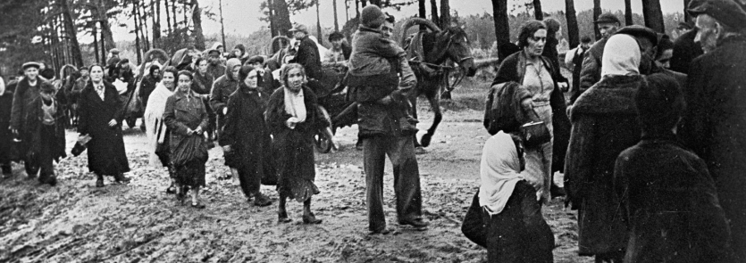

Как всё начиналось?
22 июня 1941 года. 4 часа 15 минут ...
22 июня 1941 года. 4 часа 15 минут. Противник подверг массированному артобстрелу военные и гражданские объекты, места дислокации советских воинских частей в приграничной полосе. Воздушным налетам подверглись 26 аэродромов Западного, 23 — Киевского, 11 — Прибалтийского особых военных округов и 6 аэродромов Одесского военного округа...
Войска первого эшелона Западного фронта, принявшие на себя удар германских армий группы «Центр», буквально в первые дни оказались в катастрофическом положении. Несмотря на героические усилия бойцов и командиров, начало боевых действий сложилось для наших войск крайне неблагоприятно. Соединения 3–й, 10–й и 4–й армий, прикрывавшие границу, не смогли создать сплошного фронта, организовать устойчивую оборону. Бои на линии укрепленных районов носили в значительной мере очаговый характер. Многим частям с самого начала пришлось драться в окружении. Внезапные удары вражеской авиации нарушили связь, затруднили управление войсками...
Предваряя вторжение, уже с 15 июня на территорию Западного Особого военного округа начали проникать разведывательные и диверсионные группы вермахта.
Агенты противника, экипированные в форму военнослужащих РККА, хорошо владеющие русским языком, должны были с началом боевых действий разрушать коммуникации, сеять панику, уничтожать объекты жизнеобеспечения, провоцировать беспорядки. И в ряде случаев им это удалось. Одна из диверсионных групп — «Першы штурмовы звяз» — состояла преимущественно из жителей Западной Белоруссии, бывших граждан Польши (в конце лета 1941–го это подразделение было расформировано, а личный состав влился в Минскую городскую полицию порядка). Диверсанты из «звяза», которым командовал бывший подхорунжий Войска Польского В.Качан, прошли подготовку в элитном полку «Бранденбург–800». Первая группа парашютистов из состава «Першага штурмовага звяза» — всего 41 человек в форме РККА — была сброшена на советскую территорию 18 июня в районе города Сувалки для совершения диверсий на железнодорожной ветке Столбцы — Барановичи. Большую часть группы ликвидировали сотрудники госбезопасности, по всей видимости, совместно с военными или пограничниками. Вторая группа десантировалась в ночь с 21 на 22 июня к западу от Минска, успешно провела диверсию на железной дороге и выступила навстречу немецким войскам.
В ночь на 22 июня немецкие диверсанты проникли на советскую территорию и вступили в бой с пограничниками 17–го Брестского погранотряда.
Другие диверсионные группы парализовали деятельность штаба ЗапОВО, вырезав десятки метров проводов и лишив командование округа связи с войсками. За 10 минут до начала артиллерийской подготовки германский спецназ захватил все 6 мостов через Буг и обеспечил беспрепятственное продвижение частей 12–го армейского корпуса немцев к Бресту. Четыре танковые дивизии 2–й танковой группы генерала Гудериана двинулись в обход города с севера и юга. С начала войны широкое использование получила практика выброски воздушных десантов с целью захвата и удержания важных объектов и рубежей.

Советские беженцы
Для борьбы с парашютистами и диверсантами потребовались дополнительные силы и средства. Уже на второй день войны, 23 июня, ЦК КП(б)Б принял директиву «О борьбе с вражескими парашютными десантами». Директива предписывала взятие под охрану всех важнейших сооружений, мостов, предприятий, железных дорог, линий связи, телефонных и телеграфных станций, требовала организовать наблюдение и информирование командования воинских частей о появлении парашютистов и диверсантов противника.
Разумеется, никакой вооруженной силы у руководителей обкомов, райкомов и райисполкомов, кому была адресована директива, не было. Группы наблюдателей предстояло создавать, что называется, с нуля из числа местных активистов. В случаях, не терпящих отлагательства, следовало принимать меры к уничтожению врага собственными силами, используя охотничье и холодное оружие, пригодные для этих целей орудия труда (топоры, вилы и т.п.).
24 июня вышло постановление Совета Народных Комиссаров СССР «О мероприятиях по борьбе с парашютными десантами и диверсантами противника в прифронтовой полосе». Органам Народного комиссариата внутренних дел поручалось создание истребительных батальонов численностью 100 — 200 человек. Таким образом, к 25 июня было законодательно оформлено создание новых военизированных иррегулярных формирований, предназначенных для борьбы с вражескими десантами и диверсионными группами.
6 июля 1941 года СНК БССР и ЦК КП(б)Б приняли постановление «Об организации отрядов народного ополчения», которым в том числе предписывалась борьба с вражескими десантами и диверсионными группами, а в случае оккупации территории им следовало переходить к партизанским методам.
Согласно докладной записке НКГБ БССР от 5 июля 1941 года в НКГБ и НКВД СССР первые партизанские отряды и группы были созданы в БССР уже 26 июня 1941 года. В их состав вошли работники НКГБ, НКВД и курсанты Могилевской межкраевой школы. Всего 14 отрядов общей численностью 1.162 человека, в их составе оперативных и руководящих работников НКГБ — 539 человек, работников НКВД и милиции — 623 человека. По районам отряды распределялись следующим образом:
Слуцкий — 100 человек под командованием начальника УНКГБ по Минской области капитана госбезопасности А.Е.Василевского;
Лепельский — 101 человек, начальник Лидского горотдела НКГБ ст. лейтенант госбезопасности Г.Н.Сулима;
Дзержинский — 51 человек, зам. начальника 1–го Управления НКГБ БССР ст. лейтенант госбезопасности Г.Г.Старинов;
Осиповичский — 101 человек, начальник контрразведывательного отдела УНКГБ по Барановичской области капитан госбезопасности К.А.Рубинов;
Червенский — 50 человек, зам. начальника УНКГБ по Барановичской области капитан госбезопасности Н.С.Зайцев;
Березинский — 96 человек, зам. начальника УНКГБ по Белостокской области капитан госбезопасности С.В.Юрин;
Белыничский — 50 человек, нач. отделения 3–го Управления НКГБ БССР мл. лейтенант госбезопасности П.А.Ляхов;
Кричевский — 50 человек, нач. следственной части УНКГБ по Минской области лейтенант госбезопасности В.А.Симахин;
Могилевский — 101 человек, нач. секретно–политического отдела УНКГБ по Могилевской области лейтенант госбезопасности Х.С.Прибыль;
Витебский — 53 человека, зам. начальника 2–го Управления НКГБ БССР ст. лейтенант госбезопасности Л.М.Пасманик;
Шкловский — 93 человека, комендант НКГБ БССР ст. лейтенант госбезопасности С.Г.Коба;
Быховский — 103 человека, лейтенант милиции Д.Н.Кузменок;
Оршанский — 102 человека, нач. отдела уголовного розыска и помощник начальника Управления милиции НКВД БССР капитан милиции М.Л.Кожемякин;
Бобруйский — 111 человек, зам. начальника отдела 3–го Управления НКГБ БССР лейтенант госбезопасности Г.С.Морозкин.